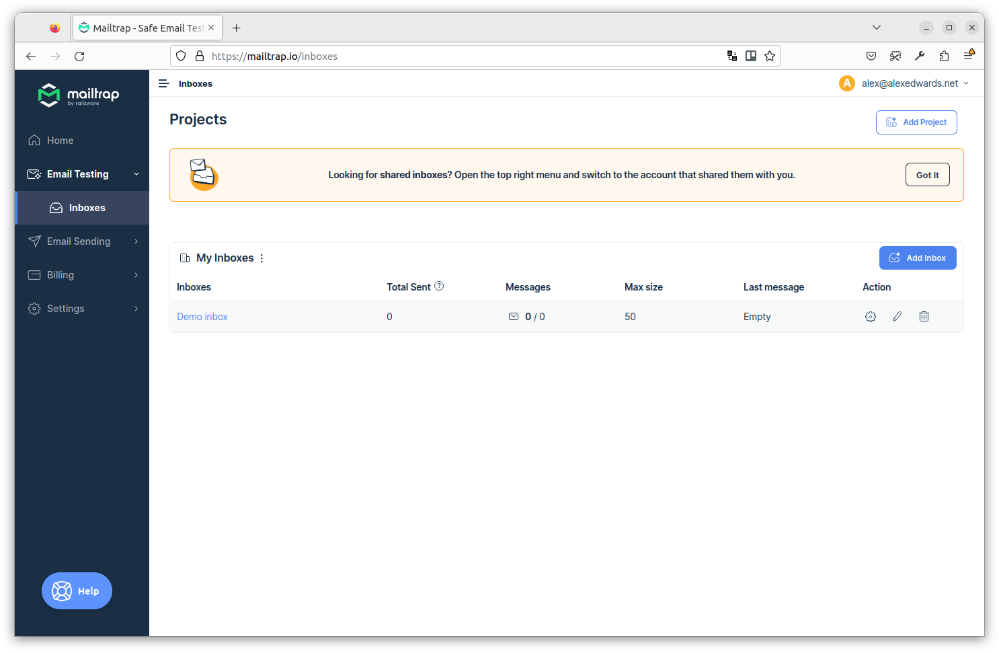
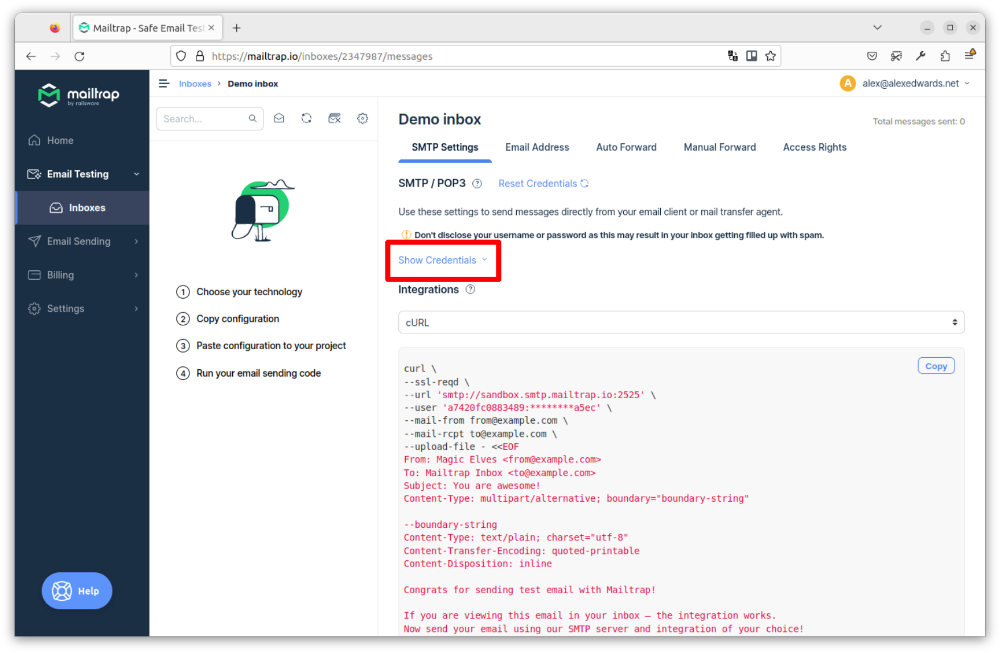
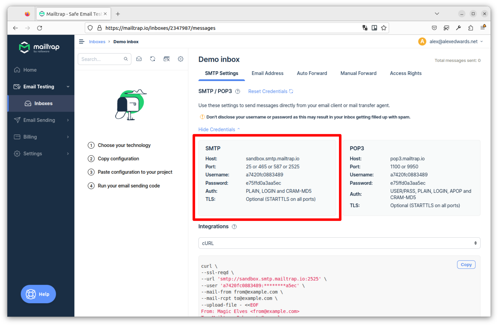

راهاندازی سرور SMTP
برای توسعه قابلیت ارسال ایمیل، به دسترسی به یک سرور SMTP (Simple Mail Transfer Protocol) نیاز داریم که بتوانیم با خیال راحت از آن برای اهداف آزمایشی استفاده کنیم.
تعداد زیادی ارائهدهنده سرویس SMTP (مانند Postmark، Sendgrid یا Amazon SES) وجود دارند که میتوانیم از آنها برای ارسال ایمیلهایمان استفاده کنیم — یا حتی میتوانید سرور SMTP خودتان را نصب و راهاندازی کنید. اما در این کتاب قرار است از Mailtrap استفاده کنیم.
دلیل استفاده از Mailtrap این است که سرویس تخصصی برای ارسال ایمیل در حین توسعه و آزمایش است. اساساً، تمام ایمیلها را به یک صندوق ورودی که شما به آن دسترسی دارید تحویل میدهد، به جای ارسال آنها به گیرنده واقعی.
من وابستگی به این شرکت ندارم — فقط معتقدم که این سرویس خوب کار میکند و استفاده از آن ساده است. آنها همچنین یک طرح ‘رایگان برای همیشه’ ارائه میدهند که برای هر کسی که با این کتاب کدنویسی میکند کافی باشد.
راهاندازی Mailtrap
برای راهاندازی حساب Mailtrap، به صفحه ثبتنام بروید که در آن میتوانید با استفاده از آدرس ایمیل یا حسابهای Google یا GitHub خود (اگر دارید) ثبتنام کنید.
پس از ثبتنام و ورود، از منو برای پیمایش به Testing › Inboxes استفاده کنید. باید صفحهای را ببینید که صندوقهای ورودی موجود شما را فهرست میکند، مشابه اسکرینشات زیر.

هر حساب Mailtrap با یک صندوق ورودی رایگان همراه است که به طور پیشفرض Demo inbox نام دارد. اگر میخواهید میتوانید با کلیک روی آیکون مداد در زیر Actions نام را تغییر دهید.
اگر روی آن صندوق ورودی کلیک کنید، باید ببینید که در حال حاضر خالی است و هیچ ایمیلی ندارد، مشابه این:

هر صندوق ورودی مجموعه اعتبارنامههای SMTP خود را دارد که میتوانید با کلیک روی لینک Show Credentials (که در اسکرینشات بالا با کادر قرمز مشخص شده است) آنها را نمایش دهید. این باعث میشود اعتبارنامههای SMTP صندوق ورودی نمایش داده شوند، مشابه اسکرینشات زیر.

اساساً، هر ایمیلی که با استفاده از این اعتبارنامههای SMTP ارسال میکنید، به جای ارسال به گیرنده واقعی، در این صندوق ورودی قرار میگیرد.
اگر در حال پیگیری هستید، اعتبارنامههای نمایش داده شده روی صفحه خود را یادداشت کنید (یا فقط تب مرورگر را باز نگه دارید) — به آنها در فصل بعدی نیاز خواهید داشت.